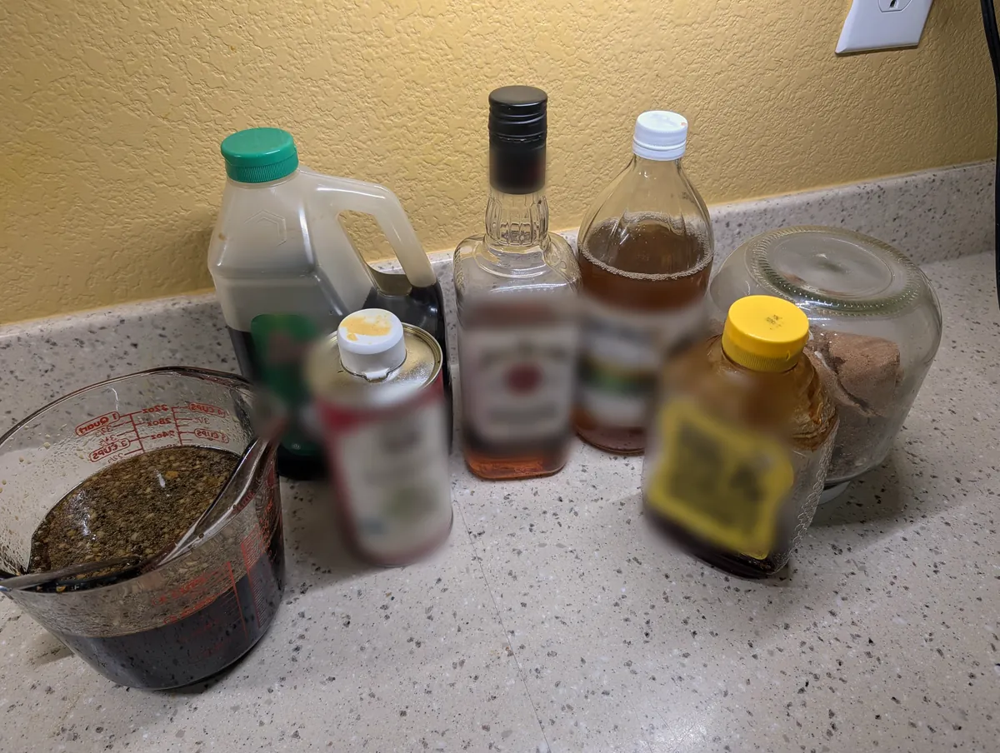
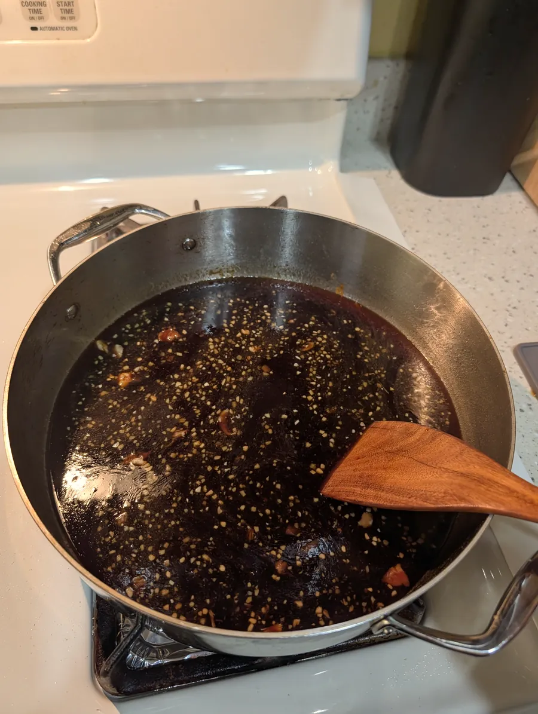
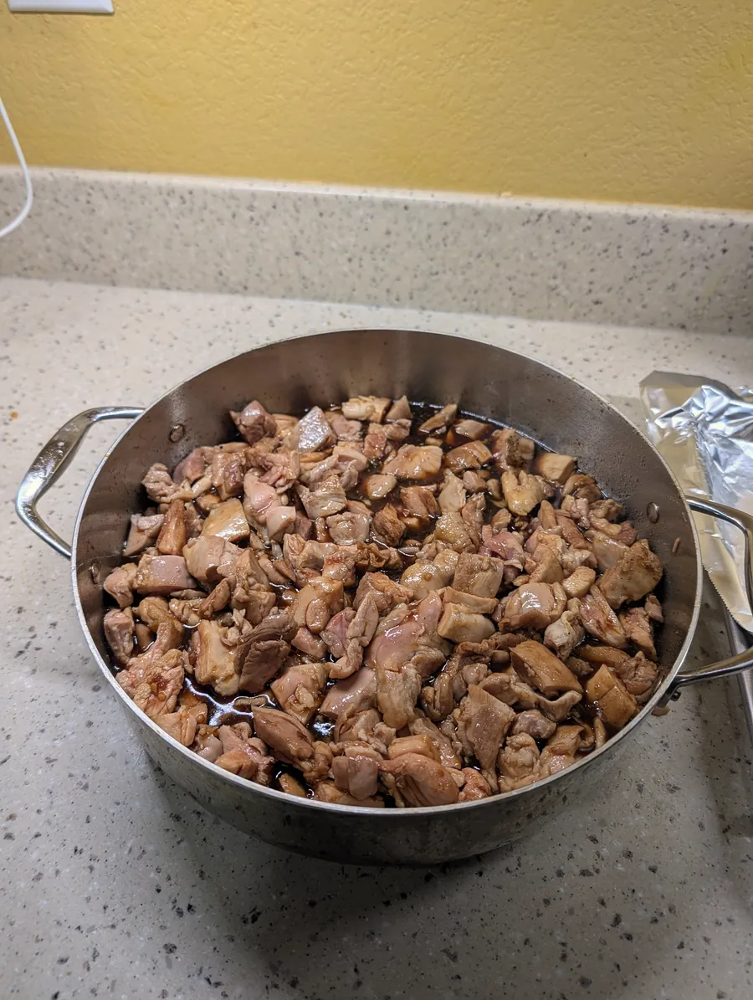
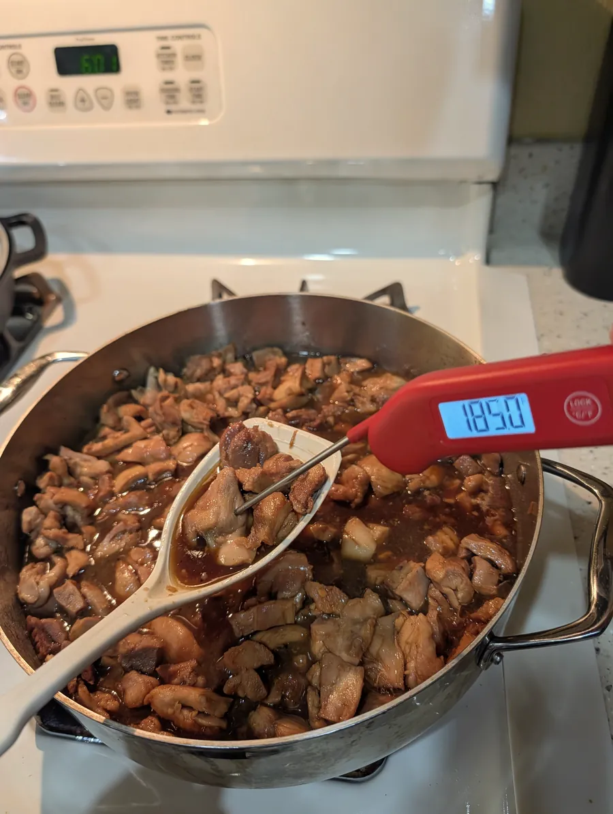
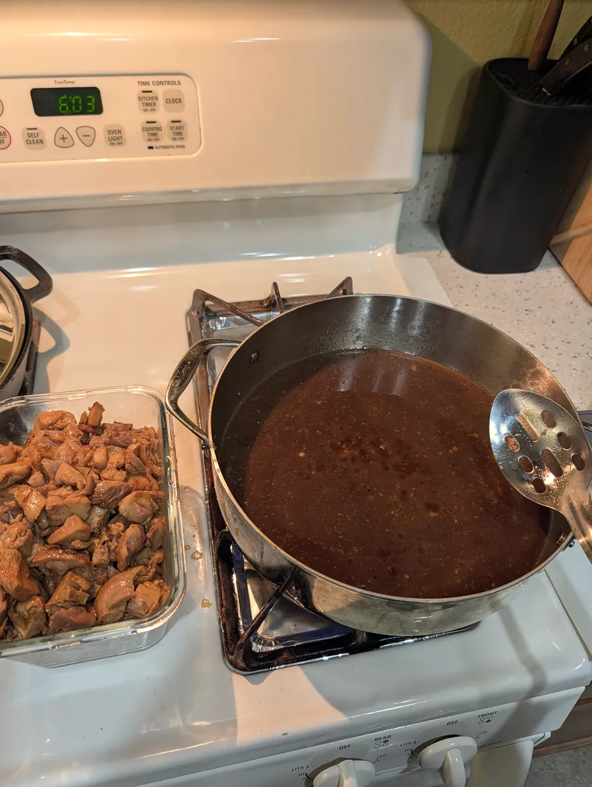
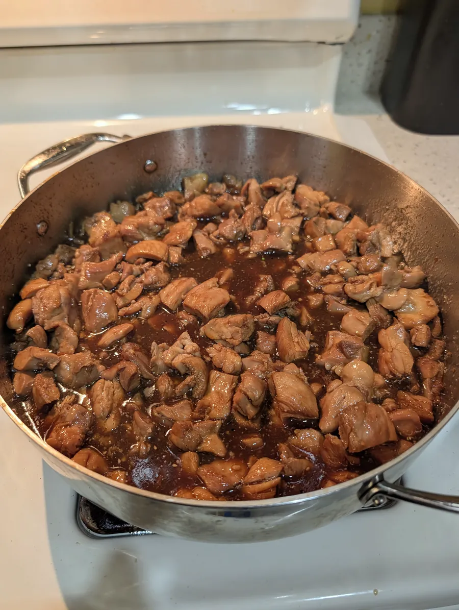

Bourbon Chicken
Adapted from a recipe shared on Reddit.
Ingredients
- 2 lb boneless skinless chicken thighs
- White pepper, salt, and MSG to season
- Sauce:
- 1 cup soy sauce
- 1/2 cup water
- 1 1/2 cups brown sugar
- 1 tbsp apple cider vinegar
- 2-3 tbsp honey
- 1 tbsp toasted sesame oil
- 1/4 cup bourbon
- 2-3 garlic cloves, chopped
- 1 tbsp fresh ginger, chopped
- To finish:
- Toasted sesame seeds
- Chopped green onions
Steps
- Cut the chicken into bite-size pieces. Season with white pepper, salt, and MSG.
- Make the sauce. In a large pot over medium heat, cook the garlic and ginger for 2–3 minutes.

- Add the rest of the sauce ingredients and stir until the sugar dissolves. Bring to a boil, then turn the heat down and simmer about 5 minutes to cook off some of the alcohol.

- Add the chicken to the sauce. Let it simmer, stirring now and then, until the chicken reaches 185°F inside. Thighs stay juicy at this temperature.

- Check a few of the thickest pieces with a meat thermometer.

- Take the chicken out of the pot with a slotted spoon and set it aside in a dish.
- If the sauce is thin, keep simmering it in the pot until it thickens, about 10–15 minutes.

- Put the chicken back in the pot and toss to coat it in the sauce.

- Top with toasted sesame seeds and chopped green onions. Serve with rice and broccoli if desired.
My tip
Once the chicken hits 185°F, I take it out of the pot before I reduce the sauce. Simmering the sauce on its own thickens it fast without overcooking the chicken. Then I add the chicken back and toss to coat.